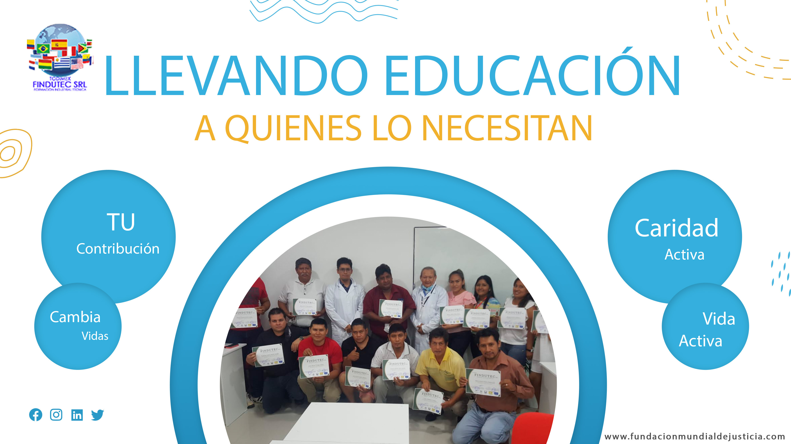
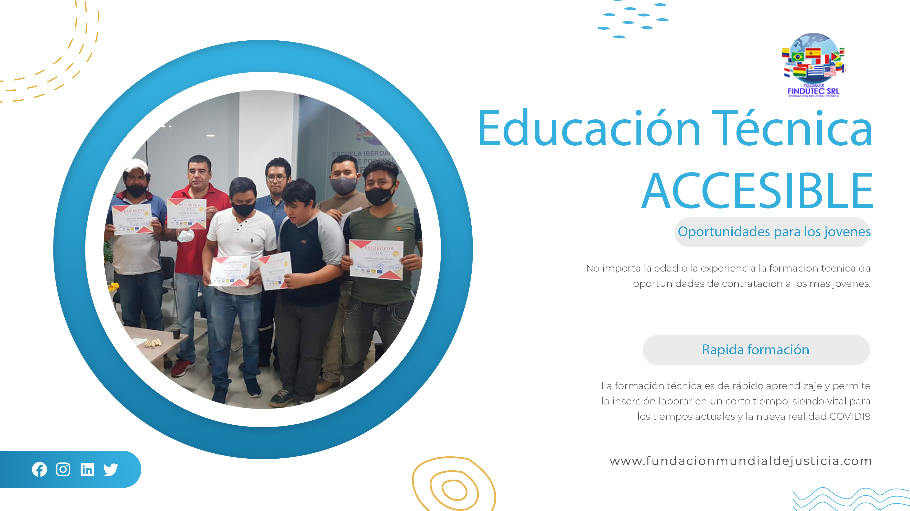

Conviertete en un Voluntario
Si sientes que tu vocación es ayudar a otras personas y llevar justicia a todos los lugares del mundo, se parte de nuestro equipo.
más personas con acceso a justicia
Nuestros proyectos alcanzan a mayor cantidad de personas y les cambia la vida no solo desde la dimension juridica.
Donacion
Con tu aporte ayudas a que otras personas reciban una justicia mas equitativa.
NUESTROS PROYECTOS DE COLABORACIÓN AL DESARROLLO
Como fundación creemos firmemente que la justicia significa más que solo asistencia jurídica, por eso seguimos proyectos que transforman vidas.
Construcción de baños
En paises en vías de desarrollo las personas tienen dificultades para el acceso a un baño digno, causandoles enfermedades.
Guarderias Educativas
Las madres de áreas rurales y periféricas no pueden desenvolverse profesionalmente, por que tienen que estar al cuidado de sus niños.
Cocinas Dignas
Donde se preparan los alimentos es primordial para una buena salud, sin embargo las dificultades economicas hacen que esto sea precario.
Capacitación Técnica a Mujeres
La capacitación técnica a mujeres permite una inserción laboral rapida y ayuda a reducir la brecha de genero .
Atención Medica-Dental Gratuita
En Latinoamérica aún existen regiones de difícil acceso, donde no se tiene personal médico y dental.
Construcción Pozos de Agua
El acceso al agua dulce es un problema mundial, no obstante existen regiones que se puede solucionar a través de pozos de agua.
Apoyamos la educación.
Iniciamos en países de Latinoamérica donde el acceso a la educación se ha hecho más difícil con la nueva realidad COVID19.



Formación técnica
Observamos la necesidad laboral de las empresas y de las personas, por eso ofertamos formación tecnica de alto rendimiento.
Bolsa de trabajo
Creamos una base de datos de técnicos capacitados y de empresas en busca de ese personal.
Becas
TODIMEX FINDUTEC colabora con la Fundación Mundial de Justicia ofertando becas desde el 25% hasta el 100%.
CURSO INTERNACIONAL MULTIPLE DE REPARACIÓN DE EQUIPOS MEDICOS
Con cada inscripción que hagas ayudas al programa "women entrepreneurs"Para inscribirte haz un donativo a partir de 100 USD. Inscribirse
Nuestra galería
Les compartimos los recuerdos de nuestros proyectos que quedan grabados en nuestras mentes y corazones .
Empresas que nos Apoyan
Las empresas a través de sus programas RSE apoyan nuestros proyectos
Ariele Castro, TODIMEX.“Como empresa de importación de equipos industriales tenemos particular interés en que se tenga personal técnico capacitado dentro de las fábricas, por este motivo apoyamos las iniciativas de la fundación.”